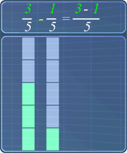

Subtracting Fractions
Lesson Objective
In this lesson,
we will learn
about
subtracting
fractions and
will be using
some
examples
to explain how
this subtraction
works.
About This Lesson
The basic ideas behind subtracting
fractions are the same as
adding fractions.
So, once you know how to add fractions, it
is very easy to subtract fractions.
In this lesson, we will learn how to subtract two fractions that involve:
In this lesson, we will learn how to subtract two fractions that involve:
- proper fractions with like denominators
- proper fractions with unlike denominators
- proper and mixed fractions with unlike denominators

Tip #1
The lesson on adding fractions had already
covered most of the basics needed. Feel free to go through that lesson first if you are not sure about it.
Lesson Video

Math Video Transcript
Multiple Choice Questions (MCQ)
Now, let's try some MCQ questions to understand
this lesson better.
You can start by going through the series of questions on subtracting fractions or pick your choice of question below.
You can start by going through the series of questions on subtracting fractions or pick your choice of question below.
- Question 1 on subtracting fractions with like denominators
- Question 2 on subtracting fractions with unlike denominators